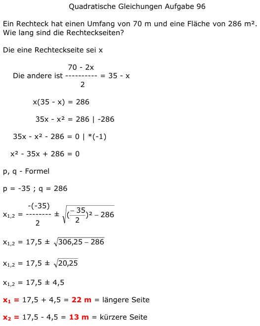

Aufgabe 95 Ein Rechteck hat einen Umfang von 70 m und eine Fläche von 286 m2. Wie lang sind die Rechteckseiten? Die eine Rechteckseite sei x 70 - 2x Die andere ist ---------- = 35 - x 2 x(35 - x) = 286 35x - x2 = 286 |-286 35x - x2 - 286 = 0 |*(-1) x2 - 35x + 286 = 0 p, q - Formel p = -35 ; q = 286  x1,2 = 17,5 ± 4,5 x1 = 17,5 + 4,5 = 22 m = längere Seite x2 = 17,5 - 4,5 = 13 m = kürzere Seite